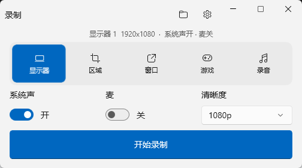
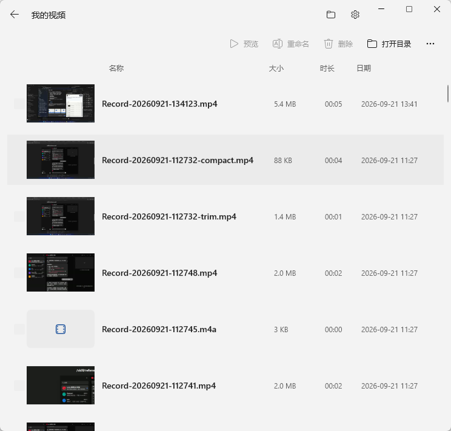
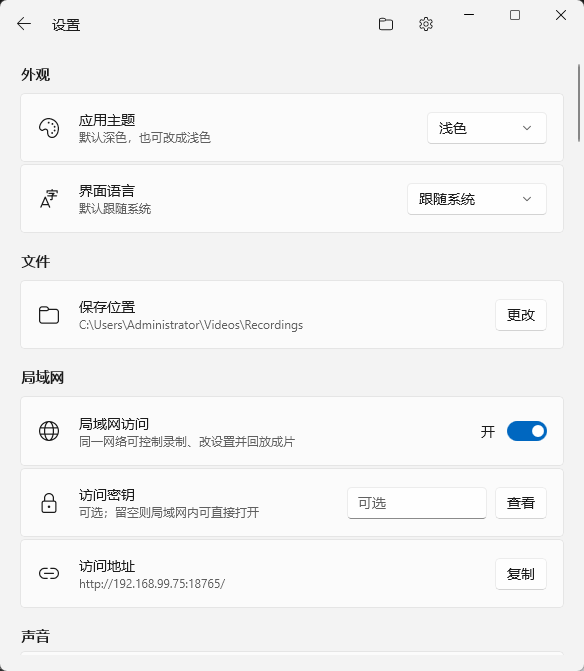

●
想录什么，就选什么
显示器、区域、窗口、游戏、纯音频五种模式。指定窗口被遮挡时，画面仍然跟着它。
- 720p 至 4K
- 最高 60 fps
- 硬件编码优先
▣显示器⌗区域□窗口⊙游戏♪录音
从屏幕、窗口到游戏和声音，一套本地工具完成录制、管理与简单剪辑。无需账号，没有强制水印，素材始终由你掌控。
当前版本 1.0.2 · x64 · 免费开源

从按下录制，到拿到成片
课程、会议、教程、游戏或纯音频，都有合适的录制方式。结束后直接在本机预览和处理。
显示器、区域、窗口、游戏、纯音频五种模式。指定窗口被遮挡时，画面仍然跟着它。
系统声和麦克风可以分别开关。再加上摄像头、文字、图片或时间戳水印，一次录出完整内容。
预览、剪切、合并、压缩、修复、字幕和背景音乐都在本机完成，默认另存，不破坏原片。
AI Skill 与开放接口
随产品提供的 luma-control Skill，让兼容 Skill 的 AI 通过本机接口读取状态、选择目标、开始或停止录制，并继续整理片库。
每个动作都走已公开的 API；可验证、可鉴权，也不会把录制内容交给 AI。
“录制 Luma 窗口”
luma-control选择窗口 → 开始recording/api/v1/targets/windows200/api/v1/target200/api/v1/session/start200本地优先，不是口号
没有注册流程，没有云端素材库，也没有为了去水印而设置的付费门槛。Luma 在当前 Windows 会话中完成采集和处理。
本机片库
每段录制自动进入片库。预览内容、查看时长、整理文件，再用内置工具快速交付。

局域网远程控制
用手机或另一台电脑打开本机地址，就能远程选择模式、开始或停止、调整设置并回放。所有操作只在同一局域网中完成。

现在开始
下载压缩包，解压后即可运行。FFmpeg 已随包提供，无需额外配置。